전기공사산업기사 (2006-03-05 기출문제)
1과목: 전기응용
1. 광원의 광색 온도란?
- 백색을 낼 때의 온도
- 같은 색을 낼 때의 백금의 온도
- 같은 색을 내는 흑체의 온도
- 같은 색을 내는 열 루미네슨스의 온도
(정답률: 53%)

2. 화학 공업 제품의 생산에 전기로를 이용하면 다른 연소로에 비해 장점이 아닌 것은?
- 불순물의 혼입을 막을 수 있다.
- 광범위한 온도를 얻을 수 있다.
- 정밀도가 높은 온도 제어가 가능하다.
- 열 효율이 낮다
(정답률: 81%)
3. 12층 건물에 엘리베이터가 적재 무게가 800[kg] 승강 속도 50[m/min]를 설치 할 때 전동기의 용량 [KW]은?(단, 효율은 81.7%)
- 8
- 10
- 12
- 14
(정답률: 64%)
4. 직접 조명 기구의 하향 광속 비율이 가장 적당한 것은?
- 10~40%
- 40~60%
- 60~90%
- 90~100%
(정답률: 55%)
5. 보일러 수위 제어 및 반응 온도 제어에 적합한 것은?
- ON - OFF 제어
- 비례 동작 제어
- 적분 동작 제어
- 미분 동작 제어
(정답률: 64%)
6. 다음 ( ) 안에 들어갈 말이 순서대로 되어 있는 것은?
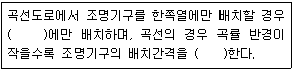
- 안쪽, 짧게
- 안쪽, 길게
- 바깥쪽, 짧게
- 바깥쪽, 길게
(정답률: 81%)
7. 궤간 1m이고 반경이 1270m의 곡선 궤도를 64km/h로 주행하는데 적당한 고도 mm는?
- 13.4
- 15.8
- 18.6
- 25.4
(정답률: 60%)
8. 적외선 건조와 관계없는 사항은?
- 공산품의 표면 건조에 적당하다.
- 두꺼운 목재의 건조에 적당하다.
- 건조기의 유지비가 적게 든다.
- 구조가 간단하다.
(정답률: 66%)
9. 완전 확산면의 광속 발산도가 2000rlx일 때 휘도는 약 몇 [Cd/cm2]인가?
- 0.2
- 0.064
- 0.628
- 637
(정답률: 60%)
10. 직류 아크 용접에서 용접봉을 용접기의 약 (+)극에 모재를 음(-)극에 연결하는 경우의 극성은?
- 정극성
- 역극성
- 자극성
- 용극성
(정답률: 70%)
11. 단상 정류로 직류 전압 100V를 얻으려면 반파 및 전파 정류인 경우 각각 권선 상전압 Es 는 약 얼마로 하여야 하는가?
- 311V, 222V
- 222V, 111V
- 166V, 222V
- 166V, 314V
(정답률: 64%)
12. 방전 개시 전압을 나타내는 것은?
- 스토우크스의 법칙
- 패닝의 효과
- 파센의 법칙
- 톰슨의 법칙
(정답률: 75%)
13. 금속염의 수용액을 전기 분해하면 음극에 금속이 생기게 되는 것을 무엇이라 하는가?
- 전식
- 전해
- 전착
- 전주
(정답률: 42%)
14. PLC의 CPU부의 구성으로 거리가 먼 것은?
- 연산부
- 데이터 메모리부
- 래더 다이어그램부
- 프로그램 메모리부
(정답률: 77%)
15. 변전소 급전신을 통하여 병렬로 접속하였을 때 전압이 높은 변전소의 부하는 전압이 낮은 변전소에 비하여 어떠한가?
- 첨두 부하가 크다.
- 평균 부하가 크다.
- 부하율이 나쁘다.
- 물질의 종류 및 상태에 따라 다르다.
(정답률: 46%)
16. 천장 전반이 광원으로 되어 있으므로 눈부심이 없고 밝음 차이와 그림자가 없는 균등한 조도를 얻을 수 있는 조명 방식은?
- 직접 조명
- 간접 조명
- 전반 조명
- 국부 조명
(정답률: 53%)
17. 온도 변화에 따른 레일의 신축에 대비하여 연결부에 두는 틈새 여유를 무엇이라 하는가?
- 궤간
- 유간
- 확도
- 고도
(정답률: 66%)
18. 저항 발열체가 구비해야 될 조건에 대하여 설명한 내용 중 틀린 것은?
- 내식성이 클 것
- 온도 계수가 클 것
- 내열성이 클 것
- 연성 및 전성이 풍부할 것
(정답률: 59%)
19. 다음 발열체 중 최고 사용 온도가 가장 높은 것은?
- 니크롬 제1종
- 니크롬 제2종
- 철 - 크롬 제1종
- 탄화규소 발열체
(정답률: 60%)
20. 효율이 높고 고속 동작이 용이하며 소형이고 고전압 대전류에 적합한 정류기로 사용되는 것은?
- 수은 정류기
- SCR
- 회전 변류기
- 전동 발전기
(정답률: 75%)
2과목: 전력공학
21. 전선로의 지지물 양족의 경간의 차가 큰 장소에 사용되며, 일명 E 철탑이라고도 하는 표준 철탑의 일종은?
- 직선형 철탑
- 내장형 철탑
- 각도형 철탑
- 인류형 철탑
(정답률: 44%)
22. 수력발전소의 댐의 설계 및 저수지 용량 등을 결정하는데 사용되는 것은?
- 유랑도
- 유활곡선
- 수위 - 유량곡선
- 적산유량곡선
(정답률: 37%)
23. 3상용 차단기의 정격차단용량은?
- 정격전압 x 정격차단전류
- 3 x 정격전압 x 정력전류
- 3 x 정격전압 x 정격차단전류
 x 정격전압 x 정격차단전류
x 정격전압 x 정격차단전류
(정답률: 36%)
24. 불평형 부하에서 역률은 어떻게 표현되는가?
- 유효전력/각상의 피상전력의 산술합
- 유효전력/각상의 피상전력의 벡터합
- 무효전력/각상의 피상전력의 산술합
- 무효전력/각상의 피상전력의 벡터합
(정답률: 41%)
25. 후비보호계전기방식의 설명으로 틀린 것은?
- 주보호계전기가 보호할 수 없을 경우 동작하며, 주보호계전기와 정정값은 동일하다.
- 주보호계전기가 그 어떤 이유로 정지해 있는 구간의 사고를 보호한다.
- 주보호계전기에 결함이 있어 정상 동작할 수 없는 상태에 있는 구간 사고를 보호한다.
- 송전선로에서 거리계전기의 후비보호계전기로 고장선택계전기를 많이 사용한다.
(정답률: 30%)
26. 화력발전소에서 1톤의 석탄으로 발생시킬 수 있는 전력량은 약 몇 KWh 인가? (단, 석탄 1Kg의 발열량은 5,000 kcal, 효율은 20%이다.)
- 960
- 1,060
- 1,160
- 1,260
(정답률: 28%)
27. 배전선의 전압조정 방법이 아닌 것은?
- 승압기 사용
- 유도전압조정기 사용
- 병렬콘덴서 사용
- 주상변압기 탭 전환
(정답률: 30%)
28. 송전선로에서 근접한 통신선에서 발생하는 유도장해에 관한 설명으로 틀린 것은?
- 정전유도의 원인은 전력선의 영상전압에 의해 발생한다.
- 전자유도의 원인은 전력선의 영상전류에 의해 발생한다.
- 유도장해를 억제하기 위하여 송전선에 충분한 연가를 한다.
- 유도되는 전압은 통신선의 길이에 비례하낟.
(정답률: 32%)
29. 그림과 같은 회로의 영상, 정상, 역상 임피던스 Z0, Z1, Z2는?
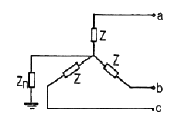
- Z0=Z+3Zn, Z1=Z2=Z
- Z0=3Z+Zn, Z1=3Z, Z2=Z
- Z0=3Zn, Z1=Z, Z2=Z
- Z0=Z+Zn, Z1=Z2=Z+Zn
(정답률: 30%)
30. 변전소 구내에서 보폭전압을 저감하기 위한 방법으로 잘못된 것은?
- 접지선을 얕게 매설한다.
- mesh식 접지방법을 채용하고 mesh 간격을 좁게 한다.
- 자갈 또는 콘크리트를 타설한다.
- 철구, 가대 등의 보조 접지를 한다.
(정답률: 34%)
31. 장거리 대전력 송전에서 교류 송전방식에 비교한 직류 송전방식의 장점이 아닌 것은?
- 송전 효율이 높다.
- 안정도의 문제가 없다.
- 선로 절연이 더 수월하다.
- 변압이 쉬워 고압송전이 유리하다.
(정답률: 27%)
32. 3상3선식 소호리액터접지방식에서 1선의 대지정전용량을 C[μF], 상전압 E[KV], 주파수 f[Hz]라 하면 소호리엑터의 용량은 몇 KVA인가?
- πfCE2×10-3
- 2πfCE2×10-3
- 3πfCE2×10-3
- 6πfCE2×10-3
(정답률: 21%)
33. 고압 배전선로의 보호방식에서 고장 전류의 차단방식이 아닌 것은?
- 퓨즈에 의한 보호 방식
- 리클로저에 의한 방식
- 섹셔널라이저에 의한 방식
- 자동부하 전환스위치(ALTS)에 의한 방식
(정답률: 32%)
34. 전선 a, b, c가 일직선으로 배치 되어 있다. a와 b, b와 c사이의 거리가 각각 5m 일 때 이 선로의 등가선간거리는 몇 m인가?
- 5
- 10
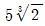
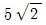
(정답률: 33%)
35. 역률개선용 콘덴서를 부하와 병렬로 연결할 때 △결선방법을 채택하는 이유로 가장 타당한 것은?
- 부하저항을 일정하게 유지할 수 있기 때문이다.
- 콘덴서의 정전용량[μF]의 소요가 적기 때문이다.
- 콘덴서의 관리가 용이하기 때문이다.
- 부하의 안정도가 높기 때문이다.
(정답률: 27%)
36. 페란티 효과의 발생 원인은?
- 선로의 저항
- 선로의 인덕턴스
- 선로의 정전용량
- 선로의 누설컨덕턴스
(정답률: 42%)
37. 3,300V 배전선로의 전압을 6,600V로 승압하고 같은 손실율로 송전하는 경우 송전전력은 승압전의 몇 배인가?

- 2
- 3
- 4
(정답률: 33%)
38. 케이블의 전력손실과 관계가 없는 것은?
- 도체의 저항손
- 유전체손
- 연피손
- 철손
(정답률: 25%)
39. 전력용 퓨즈의 장점으로 틀린 것은?
- 소형으로 큰 차단용량을 갖는다.
- 밀폐형 퓨즈는 차단시에 소음이 없다.
- 가격이 싸고 유지 보수가 간단하다.
- 과도 전류에 의해 쉽게 용단되지 않는다.
(정답률: 34%)
40. 충전전류는 일반적으로 어떤 전류를 말하는가?
- 앞선 전류
- 뒤진 전류
- 유효 전류
- 누설 전류
(정답률: 27%)
3과목: 전기기기
41. 전기자 저항 0.3Ω, 직권 계자 권선 저항 0.4Ω의 직권 전동기에 100V를 가하였더니 부하전류가 8A 이었다. 이 때 전동기의 속도 [rpm]는 약 얼마인가? (단, 기계 정수는 2.0 이다.)
- 1000
- 1216
- 1316
- 1416
(정답률: 21%)
42. 부하시 전압 조정 변압기의 설명이 잘못된 것은? (문제 오류로 실제시험에서는 2,4번이 정답처리 되었습니다. 여기서는 2번을 누르면 정답 처리 됩니다.)
- 부하전류를 끊지 않고 권수를 변환할 수 있는 변압기를 말한다.
- 전력 계통 사이에 무효전력 또는 유효전력을 자유이동시킬 수 있다.
- 전력 계통의 전압 또는 부하부담을 희망하는 값으로 유지하기 위하여 사용된다.
- 부하시 신속하고 정확한 탭 변환 장치를 하나, 변환 용 보조 변압기를 시설할 필요가 없다.
(정답률: 44%)
43. 다음 중 2방향성 3단자 사이리스터는 어느 것인가?
- TRIAC
- SCR
- SCS
- SSS
(정답률: 27%)
44. 권선비가 1:3인 전원 변압기를 통하여 100V의 교류입력이 전파 정류되었을 때 출력 전압의 평균값 [V]?
- 약 300
- 약 270
- 약 45
- 약 38
(정답률: 22%)
45. 다음 중 변압기의 무 부하손에 해당되지 않는 것은?
- 히스테리시시손
- 와류손
- 유전체손
- 표유부하손
(정답률: 26%)
46. 그림은 일반적인 반파 정류 회로이다. 변압기 2차접압 실효값을 E[V]라 할 때 직류 전류의 평균값은? (단, 정류기의 전압강하는 무시한다.)
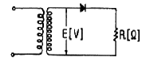
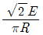
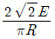
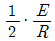
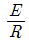
(정답률: 24%)
47. 220V, 3상, 4극, 60Hz인 3상 유도 전동기가 정격전압 주파수에서 최대 회전력을 내는 슬립은 16%이다. 지금 200V, 50Hz로 사용할 때의 최대 회전력 발생 슬립은 몇 %가 되는가?
- 16
- 18
- 19.2
- 21.3
(정답률: 26%)
48. 병렬운전을 하고 있는 두 대의 3상 동기 발전기 사이에 무효순환전류가 흐르는 것은 두 발전기의 기전력이 어떠할 때 인가?
- 기전력의 위상이 다를 때
- 기전력의 파형이 다를 때
- 기전력의 주파수가 다를 때
- 기전력의 크기가 다를 때
(정답률: 31%)
49. 3상 동기 발전기의 3상의 유도 기전력 120V, 반작용 리엑턴스 0.2Ω이다. 90°진상 전류 20A 일 때의 발 전기 단자 전압[V]은? (단, 기타는 무시한다.)
- 116
- 120
- 124
- 140
(정답률: 30%)
50. 직류전동기 중 부하가 변하면 속도가 심하게 변하는 전동기는?
- 직류 분권 전동기
- 직류 직권 전동기
- 차동 복권 전동기
- 가동 복권 전동기
(정답률: 36%)
51. 3상 유도 전동기의 토크와 출력을 설명하는 말 중 옳은 것은?
- 속도에 관계 없다.
- 동일 속도에서 발생한다.
- 최대 출력은 최대 토크보다 고속도에서 발생한다.
- 최대 토크가 최대 출력보다 고속도에서 발생한다.
(정답률: 30%)
52. 200V, 3상 유도 전동기의 전 부하 슬립이 4%이다. 공급전압이 10% 저하했을 때의 전 부하 슬립[%]은?
- 2
- 3
- 4
- 5
(정답률: 15%)
53. 변압기의 기름으로서 갖추어야 할 조건은?
- 절연 내력이 적을 것
- 인화점이 낮고 응고점이 낮을 것
- 점도가 낮을 것
- 비열이 적어야 할 것
(정답률: 34%)
54. 60[Hz], 12극의 동기 전동기의 회전 자계의 주변속도는? (단, 회전 자계의 극 간격은 1m이다.)
- 31.4 m/s
- 10 m/s
- 377 m/s
- 120 m/s
(정답률: 18%)
55. 변압기의 원리는?
- 전자 유도 작용을 이용
- 정전 유도 작용을 이용
- 자기 유도 작용을 이용
- 플레밍의 오른손 법칙을 이용
(정답률: 38%)
56. 직류 전동기의 회전수는 자속이 감소하면 어떻게 되는가?
- 불변이다.
- 정지한다.
- 저하한다.
- 상승한다.
(정답률: 20%)
57. 전부하에서 동손 100W, 철손 50W인 변압기가 최대효율을 나타내는 부하는?
- 50 %
- 67 %
- 70 %
- 86 %
(정답률: 31%)
58. 50Hz, 12극의 3상 유도 전동기가 정격 전압으로 정격출력 10HP를 발생하며 회전하고 있다. 이 때의 회전수는 약 몇 [rpm]인가? (단, 회전자 동손은 350W, 회전자 입력은 출력과 회전자 동손과 합니다.)
- 468
- 478
- 485
- 500
(정답률: 26%)
59. 다음에서 동기전동기와 구조가 동일한 것은?
- 직류 전동기
- 유도 전동기
- 정류자 전동기
- 교류 발전기
(정답률: 19%)
60. 전동기의 부하가 증가할 때 다음 설명 중 틀린 것은?
- 전동기의 속도가 떨어진다.
- 역기전력이 감소한다.
- 전동기의 전류가 증가한다.
- 전동기의 단자전압이 증가한다.
(정답률: 18%)
4과목: 회로이론
61. △결선된 저항부라를 Y결선으로 바꾸면 소비 전력은 어떻게 되겠는가? (단, 저항과 선간 전압은 일정하다.)
- 3배
- 9배
- 1/9배
- 1/3배
(정답률: 35%)
62. 저항과 유도 리엑턴스의 직렬 회로에 E = 14 + j38[V]인 교류 전압을 가하니 I = 6 + j2 [A]의 전류가 흐른다. 이 회로의 저항과 유도 리엑턴스는 얼마인가?
- R = 4Ω , XL = 5Ω
- R = 5Ω , XL = 4Ω
- R = 6Ω , XL = 3Ω
- R = 7Ω , XL = 2Ω
(정답률: 25%)
63. R - L - C 직렬공지 회로에서 R=100Ω, L=314mL, C=125.6pF 일 때 선택도(전압 확대율)은?
- 2x103
- 3x103
- 4x102
- 5x102
(정답률: 19%)
64. 인덕턴스 L 인 코일에 전류 i=Imsinwt가 흐르고 있다. L에 축적된 에너지의 첨두값은?
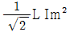
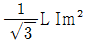
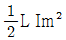
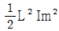
(정답률: 20%)
65. 4단자 정수 A,B,C,D 중에서 어드미턴스의 차원을 가진 정수는 어느 것인가?
- A
- B
- C
- D
(정답률: 33%)
66. 그림과 같은 회로망에서 Z1 을 4단자 정수에 의해 표시하면 어떻게 되는가?
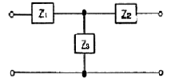
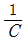
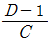
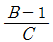
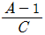
(정답률: 39%)
67. 3상 불평형 전압에서 역상 전압이 50V이고 정상 전압이 200V, 영상 전압이 10V라고 할 때 전압 불평형률은?
- 0.01
- 0.⑤
- 0.25
- 0.5
(정답률: 42%)
68. 그림과 같은 4단자망의 4단자 정수는?
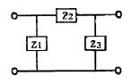
- 1+Z2Z3, Z2, Z1(1+Z2Z3), 1+Z1Z2
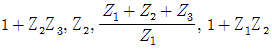
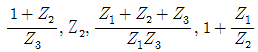
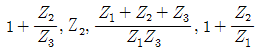
(정답률: 34%)
69. 테브낭의 정리를 사용하여 그림(a)의 회로를 (b)와 같은 등가회로로 바꾸려 한다. V와 R의 값은?
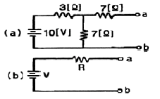
- 7V, 9.1Ω
- 10V, 9.1Ω
- 7V, 6.5Ω
- 10V, 6.5Ω
(정답률: 39%)
70. R - L - C 병렬 회로에서 L 및 C의 값을 고정시켜 놓고 저항 R의 값만 큰 값으로 변화시킬 때 옳게 설명한 것은?
- 이 회로의 Q(선택도)는 커진다.
- 공진 주파수는 커진다.
- 공진 주파수는 변화한다.
- 공진 주파수는 커지고, 선택도는 작아진다.
(정답률: 25%)
71. 다음 파형의 라플라스 변환은?
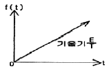
- E/S
- E/S2
- E/Ts
- E/TS2
(정답률: 26%)
72. 두 코일이 있다. 한 코일의 전류가 매초 40A의 비율로 변화할 때 다른 코일에는 20V의 기전력이 발생하였다면 두 코일의 상호 인덕턴스 [H]는?
- 0.2
- 0.5
- 0.8
- 1.0
(정답률: 20%)
73. 대칭 3상 교류에서 순시값의 벡터 합은?
- 0
- 40
- 0.577
- 86.6
(정답률: 32%)
74. R=10Ω, ωL=5Ω,
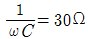
이 직렬로 접속되 회로에서 기본파에 대한 합성 임피던스 Z3는 각각 몇 Ω인가?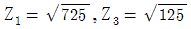
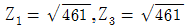
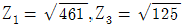
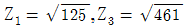
(정답률: 38%)
75. 그림의 RL 직렬 회로가 스위치를 닫은 상태에서 정상이었다. 스위치를 개방한 후 t=10-3sec 일 때의 전류I[A]는?
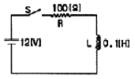
- 0.12
- 0.084
- 0.076
- 0.044
(정답률: 19%)
76. 그림에서 저항 20Ω에 흐르는 전류는 몇A인가?
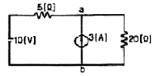
- 0.4
- 1
- 3
- 3.4
(정답률: 25%)
77. 일반적으로 대칭 3상 회로의 전압, 전류에 포함되는 전압, 전류의 고조파는 n을 임의의 정수로 하여 (3n+1)일 때의 상회전은 어떻게 되는가?
- 상회전은 기본파와 동일
- 각상 동위상
- 정지 상태
- 상회전은 기본파와 반대
(정답률: 29%)
78.
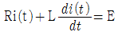
에서 모든 초기값을 0으로 하였을 때 i(t)의 값은?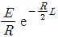
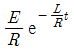
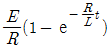
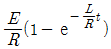
(정답률: 29%)
79. 그림과 같은 회로의 전달함수는? (단, T - RC 이다.)
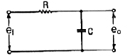
- TS+1
- TS2+1
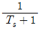
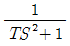
(정답률: 24%)
80.
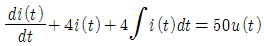
를 라플라스 변환하여 전류 i(t)의 값을 구하면? (단, t=0에서 i(0)=0,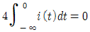
이다.)- -50 ε-2t
- -50 ε2t
- 50 ε2t
- 50 ε-2t
(정답률: 31%)
5과목: 전기설비
81. 사용되는 전선이 반드시 절연전선이 아니라도 되는 배선 공사는?
- 합성수지관 공사
- 금속관 공사
- 버스 덕트 공사
- 플러어 덕트 공사
(정답률: 21%)
82. 발전소에는 필요한 계측장치를 시설하여야 한다. 다음 중 시설하지 않아도 되는 계측 장치는?
- 발전기의 전압
- 주요 변압기의 역률
- 발전기의 고정자의 온다
- 특별고압용 변압기의 온다.
(정답률: 36%)
83. 저압 옥내간선은 특별한 경우를 제외하고 다음 중 어느 것에 의하여 그 굵기가 결정되는가?
- 변압기 용량
- 전기 방식
- 부하의 종류
- 허용 전류
(정답률: 44%)
84. 옥내에 시설하는 저압전선으로 나전선을 절대로 사용하여서는 아니 되는 것은?
- 애자사용공사에 의하여 전개된 곳에 전기로용 전선을 시설하는 경우
- 라이팅 덕트 공사에 의하여 시설하는 경우
- 버스 덕트 공사에 의하여 시설하는 경우
- 금속 덕트 공사에 의하여 시설하는 경우
(정답률: 24%)
85. 가공전선로의 지지물에 시설하는 지선으로 연선을 사용할 경우에는 소선이 최소 몇 가닥 이상이어야 하는가?
- 3
- 4
- 5
- 6
(정답률: 34%)
86. 지중 전선로에 사용되는 전선은?
- 절연전선
- 동복강선
- 케이블
- 나경동선
(정답률: 40%)
87. 저압 가공전선이 다른 저압 가공전선과 접근상태로 시설되거나 교차하여 시설되는 경우에 저압 가공상호간의 이격거리는 몇 cm이상이어야 하는가? (단, 한 쪽의 전선이 고압절연전선이라고 한다.)
- 30
- 40
- 50
- 60
(정답률: 20%)
88. 최대 사용전압이 23,000V인 권선으로서 중성점 접지식 전로에 접속하는 변압기 전로의 절연내력을 시험 할 때 시험되는 권선과 다른 권선, 철심 및 외함간에 연속하여 10분간 가하는 시험전압은 몇 V인가? (단, 중성점 접지식 전로는 중성선을 가지는 것으로서 그 중성선에 다중접지를 하는 것임)
- 21,160
- 25,300
- 28,750
- 34,500
(정답률: 29%)
89. 제1종 또는 제2종 접지공사에 사용되는 접지선을 사람이 접촉할 우려가 있는 곳에 시설하는 경우로 잘못된 것은?
- 접지선으로 옥외용 비닐절연전선을 제외한 절연전선 또는 케이블을 사용하였다.
- 접지선을 시설한 지지물에 피뢰침용 지선을 시설하였다.
- 접지극은 지하 75cm 이상의 깊이에 매설하였다.
- 접지선의 지하 75cm로부터 지표상 2m까지의 부분은 합성수지관 등으로 덮었다.
(정답률: 28%)
90. 금속관 공사를 콘크리트에 매설하여 시행하는 경우 관의 두께는 몇 mm 이상이어야 하는가?
- 1.0
- 1.2
- 1.4
- 1.6
(정답률: 40%)
91. 특별 고압 배전용 변압기의 특별 고압측에 반드시 시설하여야 하는가?
- 변성기 및 변류기
- 변류기 및 조상기
- 개폐기 및 리액터
- 개폐기 및 과전류 차단기
(정답률: 31%)
92. 특별 고압 가공 전선로에서 양측의 경간의 차가 큰곳에 사용하는 철탑의 종류는?
- 내장형
- 직선형
- 인류형
- 보강형
(정답률: 46%)
93. 고압 가공전선에 케이블을 사용하는 경우의 조가용선 및 케이블의 피복에 사용하는 금속체에는 몇 종 접지공사를 하여야 하는가?
- 제1종 접지공사
- 제2종 접지공사
- 제3종 접지공사
- 특별 제3종 접지공사
(정답률: 40%)
94. 1 수용장소의 인입선에 분기하여 지지물을 거치지 않고 다른 수용장소의 인입구에 이르는 부분의 전선을 무엇이라고 하는가?
- 가공인입선
- 지중인입선
- 연접인입선
- 옥측배선
(정답률: 47%)
95. 옥내에 시설하는 고압의 이동전선의 종류로 적합한 것은?
- 600볼트 비닐절연전선
- 비닐 캡타이어 케이블
- 600볼트 고무절연전선
- 고압용의 제3종 클로로프렌 캡타이어 케이블
(정답률: 30%)
96. 시가지의 도로상에 시설하는 가공 직류 전차선로의 구분 개폐기는 몇 Km 이하마다 시설하여야 하는가?
- 1.5
- 2
- 2.5
- 4
(정답률: 32%)
97. “고압 또는 특별고압의 기계기구, 모선 등을 옥외에 시설하는 발전소, 변전소, 개폐기 또는 이에 준하는 곳에 시설하는 울타리, 담 등의 높이는 ( ① )m 이상으로 하고, 지표면과 울타리, 담 등의 하단 사이의 간격은 ( ② )cm 이하로 하여야 한다.”에서 ①, ②에 알맞은 것은?
- ① 3, ② 15
- ① 2, ② 15
- ① 3, ② 25
- ① 2, ② 25
(정답률: 23%)
98. 특별고압 가공전선로의 지지물로 사용하는 철탑의 종류 중 인류형은?
- 전선로의 이완이 없도록 사용하는 것
- 지지물 양쪽 상호간을 이도를 주기 위하여 사용하는 것
- 풍압에 의한 하중을 인류하기 위하여 사용하는 것
- 전가섭선을 인류하는 곳에 사용하는 것
(정답률: 26%)
99. 전력보안 통신용 전화설비를 하지 않아도 되는 곳은?
- 원격 감시제어가 되지 아니하는 발전소, 변전소
- 2 이상의 급전선 상호간과 이들을 총합 운용하는 급전소 간
- 급전소를 총합 운용하는 급전소로서, 서로 연계가 똑같은 전력계통에 속하는 급전소 간
- 동일 수계에 속하고 보안상 긴급연락의 필요가 있는 수력발전소 상호간
(정답률: 32%)
100. 특별고압 전로와 저압 전로를 결합하는 변압기 저압측의 중성점에 제2종 접지공사를 토지의 상황 때문에 변압기의 시설장소마다 하기 어려워서 가공 접지선을 시설하려고 한다. 이 때 가공접지선으로 동복강선을 사용한다면 그 최소 굵기는 몇 mm인가?
- 3.2
- 3.5
- 4
- 5
(정답률: 12%)